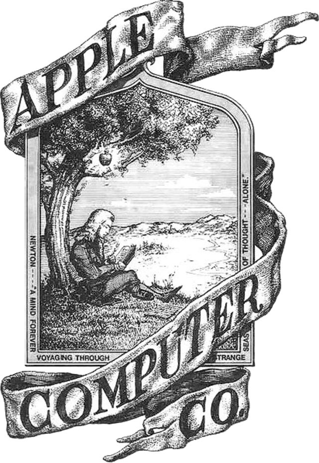

Welcome to the Apple website history page! Here, you'll learn about the evolution of Apple's online presence, from its early days to the modern era.
Explore the timeline of Apple's website design and discover how the company's digital identity has evolved over the years.
Fun Fact
The very first Apple logo featured Isaac Newton sitting under a tree with an apple about to fall on his head.
